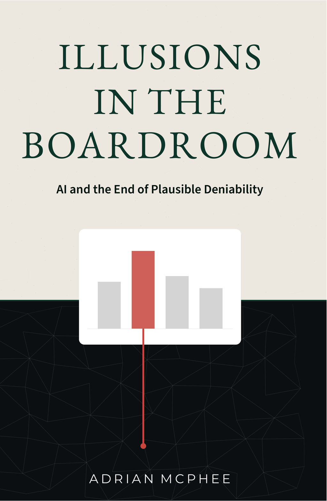

What happens when machines can read what you say alongside what your systems do?
Adrian McPhee
By now, it is clear that AI can generate content. It drafts strategy documents, summarises board packs, analyses contracts, explores financial models, generates production code. Most executives use it daily. This book is not about that capability.
This book is about the ability of AI to read and reconcile, and the tremendous effect this is set to have on competition, operating models, and the people working inside them.
When a machine can read what you say alongside what your systems do, the gap between narrative and reality becomes measurable. A strategy document can be compared against the code that must implement it. An architecture reference model can be compared against what is actually running. A budget line can be compared against the operational outcomes it was meant to produce. A portfolio label can be compared against the services that supposedly comprise it. An investment case can be compared against the incident costs it was meant to prevent.
Once these artefacts can be read together, the organisation’s claims become testable. Structural honesty becomes measurable rather than aspirational.
This book uses a specific term: software-dependent corporate. It refers to large, established organisations whose products and operations depend critically on software, but whose governance structures were designed for a world in which software was a support function.
Banks, insurers, retailers, logistics firms, airlines, public sector bodies, and older companies that describe themselves as technology companies but still operate with inherited governance assumptions all fall into this category. These organisations are not pre-software. They have used software for years. What they have not adapted to is the shift that occurred between roughly 2008 and 2012, when software stopped being infrastructure and became the primary medium through which these companies create and deliver value.
By 2012, the structural change was complete: these organisations needed to become software companies. They hired engineers by the hundreds, adopted continuous delivery, and launched digital transformation programmes. The governance structures, the budget cycles, the HR frameworks, and the executive mental models stayed where they were. The technology changed. The power structures did not. The misalignment has been compounding ever since.
The most reliable diagnostic is linguistic. If your organisation talks about “the business” as a group of people who are not engineers, your organisation is a software-dependent corporate. If engineers are considered to work in the business by default, it probably is not. Once that split exists, the misalignment compounds structurally.
There is a simple test for any software-dependent corporate. If an AI system reads your strategy documents, your architecture models, your process descriptions, and your code together, will the synthesis converge on something coherent? Or will it collapse into contradiction? For most organisations, it collapses. The chapters that follow show why, what it costs, and what it takes to close it.
The book moves from diagnosis to correction: what the reader reveals (Part I), why the gap exists (Part II), what it costs (Part III), and what the structural preconditions are for closing it (Part IV).
This book is written for the people who govern software-dependent corporates: board members and supervisory board members (particularly non-executive directors and audit committee chairs) and the executive team: the CEO, the CFO, and the CHRO. It is also for the CTO who needs to hand it to them. It contains technical specificity that some board members will find unfamiliar: microservices, API contracts, data models, deployment pipelines. The board cannot authorise structural changes it does not understand. Where a concept requires context, the surrounding prose provides it. The technical specificity is the argument. A board that cannot follow the mechanism cannot authorise the correction.
For non-executive directors and supervisory board members, the argument carries an additional register. The board that governs through untested representations when testing is cheap and available occupies a different position from the board that lacked the tools. Chapter 8 names this explicitly. The rest of the book explains how to close the gap before it becomes a discoverable governance record.
The vignettes throughout this book are illustrative. They are composited and fictionalised to represent structural patterns the author has observed across consulting engagements in financial services, retail, logistics, and media. Details, including industry, geography, headcount, individual roles, and financial figures, have been invented or altered. No vignette describes a specific organisation.
Thesis. Software-dependent corporates govern through representations that were never designed to be tested against the system: narratives that replace reality, portfolio labels with no executable boundary, architecture that advises but does not bind, processes that were never written down. These are not failures of intelligence but the structural consequence of separating “the business” from engineering, coping mechanisms whose cost structure has changed. AI makes reconciliation cheap and continuous. The gap between what the organisation says and what the system does becomes measurable. Each quarter of informed inaction extends a record the board will eventually be asked to explain.
Diagnosis. Products exist in portfolios but have no coherent boundary in the code. Architecture describes aspirations rather than systems. Capital attaches to labels while value is created at process boundaries that the financial model cannot observe. Coordination consumes 30--40\
Six demands. Before any AI investment, the board should require management to produce six items for a single critical process: (1) a process inventory ranked by revenue contribution and risk exposure, with a named owner for each, (2) a structured process definition with states, transitions, decision points, and failure modes, (3) a single named owner with a charter and boundary, not a committee, (4) a contract inventory listing the units this process depends on, with versioned, testable interfaces, (5) a reconciliation report comparing the definition against the code, and (6) a cost-to-outcome trace connecting investment to operational performance. If management cannot produce these for one critical process within 30 days, every AI investment builds on a foundation the organisation has never inspected.
A large European telecoms operator decides to pilot an AI assistant for its technology leadership. The brief is modest: given access to the company’s strategy documents, architecture diagrams, and code, the assistant should produce a summary of the organisation’s technology landscape and its alignment with stated strategic priorities.
The CTO is supportive. The experiment is sanctioned. A small team feeds the assistant the relevant artefacts: the annual strategy deck, the technology vision document, the architecture reference model (last updated fourteen months ago), the current service catalogue, and read access to the primary code repositories.
The assistant produces a twelve-page synthesis that is calm, precise, and devastating.
It notes that the strategy deck identifies “digital self-service for enterprise customers” as a top-three priority, but that only two of forty-seven services have any self-service provisioning logic, and both are experimental prototypes with no production traffic. It observes that the architecture reference model describes eight distinct areas of business responsibility, each meant to own its own data, but that the actual system follows a different structure: one organised around legacy databases rather than business domains. It identifies fourteen services that share a single database, contradicting the reference model’s assertion of independent ownership.
The summary does not editorialise. It reads what the organisation claims alongside what the code shows, and lists the contradictions.
The CTO recognises every finding in the summary, as none of it is new to him. What is new is that the confirmation is now documented, enumerated, and produced by a system that did not attend a single meeting. It is written down in a single document, generated in hours rather than months, making it impossible to dismiss as merely one person’s opinion.
He forwards the summary to the CEO, who responds within a day. She asks that the summary not be shared further, because “the board narrative is different, and we are not ready to reconcile.” He hears it as an instruction to keep knowing privately.
The CTO proposes a compromise: reconcile one business domain, network provisioning, as a limited pilot. The CEO declines. The pilot would produce artefacts that contradict the strategy deck submitted to the board three weeks from now. The objection is not that reconciliation is premature. It is that reconciliation would produce evidence.
The summary is saved in a folder with restricted access. The AI pilot is described as “promising but premature.” The strategy deck is presented to the board the following month, unchanged. It describes an organisation that the synthesis showed does not exist. The CTO now carries two things he did not carry before: structural confirmation that his reading of the system was correct, and confirmation that the organisation prefers to govern through narrative rather than reconcile reality.
He has spent three years building a reading of the system that the board narrative contradicts. He will walk into the boardroom next month and present the strategy deck unchanged. When a board member asks about self-service progress, he will cite the two experimental prototypes and decline to mention the synthesis. His technical judgement and his institutional role now point in opposite directions. He knows which one has authority. He knows which one he will use.
The CEO’s decision was not to defer reconciliation but to prevent it. That distinction matters. The decision preserved narrative coherence at the expense of reconciled evidence.
Consider a claims management process at a mid-sized European insurer. The team responsible has described its process in structured terms: eight states a claim can occupy, the transitions between them, the triggers, and the failure modes. Every state, every transition, and every exception is explicit and versioned.
The AI reader consumes this definition alongside the code that implements the claims process. It produces a reconciliation report:
Reconciliation: claims management process v1.2 against the running system
Divergent (definition does not match implementation):
The timeout for requesting documents is defined as five business days. The system counts calendar days, not business days. Claims submitted on Wednesday that require documents will timeout on Monday (five calendar days) rather than the following Wednesday (five business days). Impact: premature escalation of approximately 15\
Undefined (implemented but absent from definition):
A re-review step exists in the system: when an assessor sends a claim back for further review, it returns to the under review state. This step is not in the process definition. It is used approximately 40 times per month. Without it, re-reviewed claims would need to be declined and resubmitted.
Unimplemented (defined but not found in code):
The escalation for overdue documents is defined in the process, but the system silently exempts claims valued below € 500. This exemption exists nowhere in the process definition.
The reconciliation took eleven minutes. A consulting engagement would take two to four weeks and would be unlikely to identify the business-day versus calendar-day discrepancy, because that discrepancy lives at the intersection of three artefacts that no single interviewee would hold in mind simultaneously.
The reconciliation is only possible because the process definition exists as a structured, machine-readable artefact. Without it, the AI reader can describe what the code does, but it cannot identify where the code diverges from intent, because intent was never written down.
The reader inevitably gets things wrong: inflating service counts, mistaking monitoring traffic for actual communication, failing to distinguish a temporary workaround from a deliberate design choice. These errors define the boundary rather than undermining the tool. The first triage cycle requires two to three days of domain expert review; by the fourth, the expert reviews exceptions rather than the full output.
Once reconciliation is continuous, formal compliance will replace substantive accuracy unless ownership, not the tool, remains the governing constraint.
AI’s significance for organisations is not that it produces artefacts but that it reads them. It reads without fatigue, without respect for hierarchy, narrative confidence, or institutional memory. It does not know who wrote a document or how many people approved it. It only cares whether what exists corresponds to what is claimed.
Most organisations get this backwards. The generator accelerates the part that was never the bottleneck. Writing code was never the hard part. Design is: deciding what to build, where the responsibilities lie, how the pieces interact. These decisions depend on clear business processes, explicit ownership, and precise descriptions of how value is created, and in most software-dependent corporates, these inputs do not exist in a form that any tool can reason about reliably.
The generator also reinforces a comfortable assumption: that AI is a tool that works for people inside the existing organisational structure. This does not threaten anyone’s role or challenge any power structure. The reader does both: it helps organisations see themselves clearly, which is why most organisations deploy the generator first and the reader never.
When AI is used as a reader, as a system that continuously reconciles what the organisation says with what it does, the implications are structural. The reader does not produce new content. It produces accountability. It takes artefacts that were designed to exist independently and reads them together, surfacing contradictions that the organisation has been maintaining socially.
The strategy deck, the architecture model, the service catalogue, and the code in the telecoms vignette had all existed for years. No one had read them together and asked: are these consistent? The AI enumerated what the CTO already knew in a form that could not be dismissed as opinion.
The reader does this across multiple domains simultaneously.
Strategy versus code. The AI parses the strategy for testable claims. “API-first design” is a testable claim. “Drive digital transformation” is not. For each testable claim, it examines the code for evidence. The output is not a judgement. It is an inventory: 47 services, 312 connections between them, of which 119 (38\
The reader’s power is the production of accountability by enumerating contradictions.
In organisations where reality has been mediated through layers of representation, humans bridge gaps between strategy and execution with context, intuition, and social negotiation. They absorb contradictions implicitly and carry exceptions in their heads. This labour is invisible, unpaid, and what allows illusions of work to persist.
When descriptions are too vague for the AI to reason about, it fills gaps with inference, not because the technology is immature but because the inputs are empty. Human gap-filling is invisible, hiding inside institutional knowledge. AI gap-filling is visible and embarrassing. This visibility is the reader’s gift to the organisation.
When the AI produces a list of contradictions, the organisation can no longer claim ignorance, as these discrepancies are now fully documented, enumerated, and attributed in a way that demands a response.
The response is revealing. The CEO in the telecoms vignette did not dispute the findings. She suppressed them. She asked that the summary not be shared further. This is rational behaviour. The board narrative was different, and closing the gap would have required confronting structural problems that the organisation had been absorbing socially for years.
There is a subtler response: constraining the reader rather than confronting it. AI access is limited to sanitised artefacts. Outputs are reviewed before circulation. The synthesis is filtered through the same narrative layer it was meant to bypass. Vendor incentives reinforce this: enterprise AI products are designed to complement existing workflows, not to challenge them. Data governance and compliance concerns are real, but they are also convenient reasons to keep the auditor on a short leash.
The suppression response is rational but not stable. It can be sustained when the cost of reconciliation exceeds the cost of suppression. Cheap synthesis changes the ratio.
When synthesis required a twelve-week consulting engagement, suppression was easy. The engagement happened once, produced a report, and the report could be filed. The gap between engagements allowed the organisation to absorb the findings without changing anything.
When synthesis is continuous, suppression becomes expensive. Each cycle surfaces the same contradictions plus new ones. The organisation must actively manage the output: filtering, restricting access, explaining inaction. The effort required to maintain the illusion rises while the cost of replacing it with clarity falls.
For boards, cheap synthesis creates a choice that did not previously exist: demand reconciled artefacts, or continue governing through unverified representation.
The question is whether the organisation is willing to let it read.
The quarterly board pack is due in three days. The strategy team has been preparing it for two weeks, but the technology section is still weak. The CTO’s team has submitted their update: accurate, detailed, and unreadable. Twelve pages of service dependencies, incident summaries, and migration status. The board will not engage with it.
So the chief of staff feeds the CTO’s update into an AI assistant, along with the company’s strategy document and last quarter’s board narrative. The prompt is simple: produce a two-page technology summary that connects the current state of the technology estate to the company’s strategic priorities, suitable for a board audience.
The result is impressive. The summary connects the migration of three services to a strategic priority around customer self-service. It cites a 23\
The CTO reads it carefully.
While the 23\
While every fact in the summary is individually defensible and the synthesis remains internally coherent, it is entirely unverified against external reality.
The CTO marks up three corrections and books a meeting to review them. The meeting is rescheduled once, then dropped. He does not escalate, because the structure provides no mechanism for correcting strategic narrative with system reality. The board reads the uncorrected summary. The CEO notes that the technology narrative “finally feels aligned with strategy.” Nobody asks whether the alignment is real.
AI’s capacity to generate is the more comfortable capability. It does not challenge any existing authority. The writer is the capability the organisation was already hoping for.
AI-generated narrative is dangerous not because it is false but because it is plausible.
A human writing a strategy update works from what she knows. Her knowledge is incomplete, and the gaps are visible. An AI works from whatever it is given. If the inputs include a strategy document and metrics, the AI will find connections between them, even if spurious. It will cite numbers accurately and produce a synthesis that reads as though someone with deep understanding wrote it. The AI does not have deep understanding. It has inputs. If the inputs are disconnected from reality, the output will look coherent, authoritative, and wrong.
AI-generated narrative removes the friction that once made illusion detectable. The person who prompts the AI may not know whether the output is grounded. The executive who reads it almost certainly does not. The narrative becomes self-reinforcing: it sounds precise, therefore it is treated as precise, therefore nobody checks whether it corresponds to anything real. The organisation has not become clearer. It has become more confidently wrong.
As AI makes narrative cheap, it actively deepens this problem.
A strategy deck once took weeks to produce. The expense was a natural constraint: the effort of production forced at least some engagement with the underlying reality. AI removes this constraint. Narrative becomes abundant: strategy updates generated weekly, status reports for every team, product documents for every idea rather than every commitment. The organisation generates more narrative, more frequently, with less human effort. This acceleration creates a multiplication problem: the volume of unverified narrative rapidly outpaces any organisation’s ability to test it.
Consider a concrete failure. An organisation deploys an AI agent to answer leadership questions about its own operational metrics. Revenue by territory. Retention by cohort. Conversion by channel. The agent has access to the data warehouse, to dashboards, to historical reports. Leadership asks questions. The agent answers them: specific percentages, trend comparisons, quarter-over-quarter movements. The answers arrive with explanations. They sound analytical. They are consumed as data.
For three months, nobody checks. The numbers are sometimes from the wrong time periods. They sometimes mix products. Some are fabricated entirely. But the agent explains everything with the calm authority of a system that has access to the organisation’s own data, and the explanations are coherent, so they are believed. Since the answers sound analytical, the VP of sales confidently makes territory decisions based on the output, and the CFO includes the numbers in a board deck. Anyone who raises concerns about validation is quickly told, without irony, that they are slowing down innovation.
This is not the writer path as described above. The organisation was not asking AI to generate narrative. It was asking AI to answer analytical questions about its own operations. It believed it was on the reader path. The failure is that it had skipped the structural preconditions that define the reader path.
The organisation had a writer disguised as a reader. The distinction is whether the artefacts being read are structured, versioned, owned, and binding. Without those preconditions, analytical synthesis and narrative generation converge on the same failure mode: confident fiction that nobody checks because it appears to come from the organisation’s own systems. The structural preconditions are what make reconciliation distinguishable from hallucination.
The adversarial case, that AI generates better illusion, appears to undermine the argument of this book. If AI makes pretence more convincing, how can AI also be the force that destabilises it?
The answer lies in an asymmetry between generation and reading.
AI-as-generator operates on narrative inputs: documents, metrics, descriptions. It cannot check whether they are true. If the representations are wrong, the output is wrong. Fluently, convincingly, dangerously wrong.
AI-as-reader operates on artefacts that bind: code, deployed services, process definitions wired into the running system. It cannot be fooled by better prose, because it is not reading the prose. It is reading the system.
The generator can claim the platform migration is 70\
There is a predictable misreading here. The solution is not better documentation with an AI layer on top. The reader only has force when the artefacts it reads are binding, when deviation carries consequence and someone is accountable for resolving it. Without structural ownership, AI does not expose illusion. It industrialises it.
Every software-dependent corporate now faces a fork between these two uses.
The writer path is corrosive. An organisation that deploys generative AI without structural reconciliation increases its regulatory exposure: faster narrative production generates more discoverable artefacts that a regulator or acquirer can compare against the system. Each additional quarter calibrates expectations to the generated output. The narrative becomes more fluent as the foundation beneath it degrades, and the symptoms that should have triggered correction are narrated away before they reach anyone with authority to act.
The reader path is uncomfortable, politically dangerous, and structurally transformative.
Most organisations will try to do both. They will discover that the two uses are not complementary but contradictory.
Consider what happens in practice. A product team uses an AI assistant to draft a product requirements document for a new self-service claims feature. The PRD is fluent and specific: it describes user flows, defines acceptance criteria, and references the existing claims architecture by name. It takes thirty minutes to produce. The team is pleased. The PRD is circulated.
The following week, an engineering lead runs the AI synthesis against the code alongside the new document. The synthesis flags three problems: the “existing claims architecture” was decommissioned six months ago, two user flows require access to a service the claims team has no contract with, and the acceptance criteria reference an SLA that no system in the current architecture can meet.
The AI wrote a convincing description of something that cannot be built as described, and the reader caught it in minutes.
The organisation now has a choice: fix the document to match reality, or suppress the synthesis and ship the document as written. The two uses of AI pull in opposite directions unless the writing is grounded in the same reality the reader inspects. The fork is a governance choice, not a technology choice.
The CTO of a mid-sized European insurer commissions a quarterly consulting engagement to reconcile the technology estate against the strategy. The engagement takes eight weeks and costs € 180,000. The consultants produce an accurate report. Before the findings reach the board, the CTO reviews them and softens the language. Three months later, the same gaps persist. The next engagement produces the same findings.
The CTO observes that the cost of knowing has remained constant while the gap has widened. He runs the same analysis using AI synthesis. It takes two days. The output is comparable. He runs it again the following week. The cost of knowing has collapsed. The cost of not knowing has not changed. The asymmetry has reversed.
Software-dependent corporates evolved entire functions whose purpose was to maintain coherence at the narrative level without requiring it at the system level. AI collapses the cost of the synthesis these functions perform. Cheap synthesis without ownership produces insight without consequence.
The tools exist. The remaining obstacle is willingness, and willingness requires structural change.
The CEO of a mid-sized European insurer funded a three-year technology modernisation programme at € 40 million, hired a respected CTO, and approved a new organisational structure. Two years in, the core measures she cares about have not moved. She commissions an external review. The consultants produce 120 slides and recommend another reorganisation, a new operating model, a governance framework. She approves the recommendations, because the structure provides nothing else to approve.
The CEO is not incompetent; she is governing through representations that cannot be reconciled. This was the rational outcome of a governance model designed before software mediated value creation. The representations she receives were not designed to be tested against the system. They were designed to be approved.
Every board of a software-dependent corporate receives a narrative. It arrives as a board pack, a set of management reports, a quarterly business review. It contains financial performance, programme status, risk registers, and strategic progress. Each section is produced by a different function. Each section is internally consistent. Each section describes the organisation from its own perspective.
The board reads these sections as a composite picture of the organisation. They are not. They are parallel descriptions of different organisations, each using its own language, its own measures, and its own definition of success.
The CFO’s section reports financial performance against budget: cost, revenue, margin, capital expenditure. While it is accurate and complete within its own frame, what it completely fails to do is connect expenditure to system behaviour. For example, a € 40 million technology programme merely appears as a cost line, leaving entirely unmeasured whether it has changed anything in the system that creates value.
The CTO’s section reports technology progress: deployment frequency up, a new application launched, the recruitment brand stronger. What the section does not do is connect them to strategic priorities. Deployment frequency measures engineering activity, not whether the organisation can bring a new product to market faster.
The COO’s section reports operational performance, such as claims processing times, customer satisfaction, and incident frequency. However, what the section consistently fails to explain is whether this performance is constrained by the system itself or by the people running it; a claims processing time of 14 days might reflect a genuinely complex process, or it might simply reflect a system that forces claims through five services with no common data model.
While each section is locally consistent, taken together they are globally incoherent: the organisation built no mechanism to reconcile these representations against the system that actually implements them.
This incoherence is not new. What is new is naming the mechanism that produces it.
These organisations govern through representations: strategy documents, operating models, architecture diagrams, portfolio views, KPI dashboards, board packs. These representations serve a legitimate purpose: no CEO can understand every system in a large organisation. Representations provide the necessary abstraction.
The problem arises when representations replace the thing they represent.
A portfolio view that shows “Customer Engagement” as a product with a P\&L and a roadmap is merely a representation of a business capability. If the portfolio treats it as something that can be funded, measured, and held accountable, it has fundamentally confused the label with the actual system. The product called “Customer Engagement” has no coherent boundary in the code; it is a name applied to a collection of features scattered across services maintained by different teams. While the portfolio label exists, the product itself does not.
How does this incoherence survive? Why does the board not notice?
The answer is absorption. The gap between the board narrative and the system is bridged socially, by people whose job is to translate between the two. These translation roles are so pervasive that they are invisible. Programme managers, delivery leads, portfolio analysts, business partners: each exists to bridge representations that cannot be reconciled structurally. They are not performing unnecessary work. Without them, the gap between narrative and reality would produce immediate, visible failure. But the synthesis they provide is expensive, fragile, and entirely dependent on the continued presence of the people performing it.
Boards were designed to govern through representations. Financial reports, management accounts, risk registers, and strategic plans are all representations. This is appropriate and necessary. A board cannot and should not understand every service, every data flow, every process exception in a large organisation.
The question is what happens when the representations cannot be tested against the system they describe.
When the representations are accurate, governance works. When they are disconnected from reality, the board approves a € 40 million programme not knowing that the system cannot deliver on the business case without structural changes the programme does not include. Boards are not incompetent but governing through artefacts that reach them only after the structural contradictions have been smoothed away.
The question is whether the organisation is willing to produce those artefacts.
The product review is held monthly. Each product owner presents to the CPO and a panel of senior stakeholders. The product owner for “Customer Engagement” presents third. His slides show a funnel, a set of KPIs, and a roadmap with six items colour-coded by quarter. The presentation is fluent, the narrative confident. Customer Engagement is growing, retention is improving, and the team has successfully delivered twelve features this quarter.
Then an enterprise architect asks a question. “Which services comprise Customer Engagement?”
When the product owner begins to answer and then pauses, it becomes clear that Customer Engagement is not actually a system at all. Instead, it is merely a label applied to a collection of features spanning four different services, maintained by three different teams, two of which report into an entirely different product area. For instance, the notification service is shared with Operations, the recommendation engine sits inside a legacy monolith nominally owned by Transactions, and the analytics pipeline runs on infrastructure maintained by a platform team that was recently reorganised.
A logistics company needs to add a new delivery status, “held at customs,” to the tracking flow visible to customers. The status already exists in the customs clearance system. It needs to propagate to the shipment tracking service, which feeds the customer-facing portal.
In a system with real boundaries and owned contracts, this is two days of work. One team adds the status to its published event contract. The consuming team reads the new event and renders it in the portal. Both teams can do this independently, on their own release schedules, with a versioned contract governing the interaction.
In this organisation, however, none of that applies.
A European insurer with five hundred services invests € 1.2 million in a shared integration layer for its claims process: a common event infrastructure that would let the claims adjudication, policy, and payments teams exchange information independently, replacing a fragile web of direct connections between services that causes an average of three incidents per month.
When the platform team delivers a technically sound working prototype four months later, the three consuming teams are fully willing to migrate, especially since the projected incident reduction is between 70\
When the CFO kills the investment in the annual budget review because the platform “does not show ROI in year one,” this is not a failure of imagination. It is a structurally inevitable, entirely rational response, as the CFO cannot approve what the accounting system cannot see. While the cost of € 1.2 million in engineering salaries and infrastructure is visible, the benefits of fewer incidents, faster change, and reduced coordination overhead are diffuse. Crucially, none of these benefits appear as a line item in any business unit’s P\&L.
A principal engineer at a European insurer with approximately five hundred services and a claims management platform that has been accumulating complexity for fifteen years raises a concern about a dependency that will block the roadmap. When the concern is noted but not addressed, she escalates by flagging a risk in an architecture review. After that risk is acknowledged but deprioritised, she points out that a commitment made to the board cannot be delivered as described, only to be told to find a way.
After enough of these exchanges, she stops, not because she has lost the knowledge, but because the cost of stating what she sees has become higher than the cost of staying silent. Although she still sees the problems clearly, traces the dependencies in her head, and knows exactly which parts of the system are fragile, she stops writing the emails that would have prevented the next incident. This silence is not apathy; it is the rational response to an incentive structure that consistently penalises accuracy.
When she leaves two years later, the knowledge transfer takes zero time because no mechanism exists for it. She takes with her a deep understanding of the claims adjudication process, the policy integration constraints, the payment reconciliation edge cases, and the failure modes of the document management service, none of which is captured in any document within the organisation. Her replacement arrives with equivalent credentials and no context. He spends six months learning what she carried as working knowledge. Some of what she knew, he never learns, because it was never written down.
Eight months after she leaves, a payment reconciliation job runs at 3 a.m. and produces twelve hundred incorrect records. Her replacement traces the failure to a caching behaviour in the document management service that manifests only under specific load conditions. He does not know that she encountered this exact failure twice, identified the root cause, and fixed it both times in under an hour. The warning she wrote in a draft document, and later deleted after no one responded to the first incident, is no longer available to him. He pages two colleagues. The incident runs until 6 a.m. The same failure recurs six weeks later.
The third recurrence produces 214 incorrect records already included in a quarterly regulatory filing. The correction requires a formal amendment. The explanation offered: “a technical error in the reconciliation batch process.” The actual cause, that the organisation lost the only person who understood the failure mode and never captured what she knew, is not something the filing format accommodates. The regulator notes the correction without penalty. The regulatory file now contains a record: an organisation that could not explain its own payment process.
The organisation describes this as a retention problem; it is a structural failure: the environment systematically selected against the transmission of accurate system context.
There is a further cost: the systematic destruction of the knowledge that makes the organisation legible to itself.
The people who carry this knowledge are not distinguished by title or seniority. They are distinguished by context. They understand how the system actually behaves, which parts of the architecture are fiction, where the process definitions diverge from reality, and why things were built the way they were. This understanding compounds over time. It cannot be transferred through documentation, because much of it describes things the organisation has never documented.
When these people leave, the organisation does not lose a role. It loses a piece of its own self-knowledge. When enough of them leave, the organisation becomes structurally unable to understand itself.
For a board, this is a capital destruction problem, not a human resources issue.
Context compounds. Each year the engineer remains, she catches problems earlier, identifies risks newer colleagues cannot see, and resolves incidents faster because she has seen the failure modes before. Each departure resets the curve.
The loss would be manageable if it were random. It is not. In organisations where vague plans are approved without analysis and ownership is left ambiguous to avoid conflict, the people who insist on precision create friction. Over time, the organisation selects for fluency in representation and against fluency in reality: the people who speak in roadmaps and strategic narrative advance, while the people who speak in mechanisms and failure modes are sidelined.
Human resources frameworks compound the selection. Job architectures treat roles as interchangeable units. Context is not a field in the compensation model. Internal equity rules cap incumbents while new hires arrive at market rates. The rational response is churn: engineers leave, take their context, and are replaced by people who spend months acquiring what could have been retained. The system rewards performance of contribution over actual contribution. The people who carry context are reliably the worst at performing it, because their attention is directed at the system rather than at the narrative about the system.
When context-rich people leave, the organisation compensates by adding process, documentation, and coordination. Each addition increases the distance between the work and the reality it addresses, making the environment less attractive to the people who value direct contact with reality. They leave first, because they always have the most options. Each departure confirms, to the organisation’s satisfaction, that what it needed all along was more coordination. The organisation becomes progressively less capable while appearing, through its process maturity, to become more disciplined.
The changes described in this book, making processes explicit, establishing autonomous units, running continuous AI synthesis, all depend on a precondition: someone must be able to describe how the system actually behaves.
AI can synthesise artefacts, but it cannot create them from nothing. The corrections that would make context explicit and shareable require the very people the organisation has been systematically losing. The longer it waits, the fewer remain who can do the work.
An organisation that begins while its experienced people are still present can make context transferable. An organisation that waits must reconstruct context from archaeology: reading code, tracing incidents, reverse-engineering processes from system behaviour. This is possible but expensive and incomplete.
The question is whether the context that experienced people carry in their heads exists anywhere else. If it does not, the organisation is carrying a fragility that no financial metric captures. Every departure is a permanent loss. Every replacement is a restart. The cost is real, cumulative, and invisible to every instrument the board currently uses to monitor organisational health.
There is a metric the board can ask for. For each critical business process: how many people can describe this process’s actual behaviour from memory, accurately enough to diagnose a failure at three in the morning? Call this the context concentration ratio. If the answer for a process that generates significant revenue is one or two people, the organisation is carrying single-point-of-failure risk on its most important knowledge. No headcount metric, retention dashboard, or succession planning framework distinguishes between a person who holds a role and a person who holds the context that makes the role functional.
The context concentration ratio connects directly to the structural demands described in Chapter 13. A named process owner, a structured process definition, a reconciliation report: these are the artefacts that transfer context from heads to descriptions. Until they exist, the organisation’s operational continuity depends on specific individuals continuing to show up. Once context leaves, reconstruction becomes forensic rather than corrective: not a talent problem but a vulnerability the board has no instrument to see.
A European insurer receives notice of a regulatory change: all policies above € 25,000 annual premium must observe a mandatory 48-hour cooling-off period before activation. During this window, payment may be collected, the policy may be cancelled without penalty, claims are not valid, and risk exposure must not be recognised on the balance sheet.
This is a fundamental change to the policy lifecycle rather than a simple feature request.
Given that the insurer has five hundred services in its technology estate, “activation” is not managed by a single system but spans five: quoting, payments, the policy record, claims eligibility, and broker commissions. Each of these feeds data to dozens of other systems, with the policy record alone being consumed by fifty-seven.
The preceding chapters named what the dysfunction costs. This chapter names who profits from it continuing.
\medskip
Between diagnosis and correction, there is resistance. It is predictable, rational, and the single most common reason structural corrections fail. Naming it is a precondition for surviving it.
The payments unit consists of nine people: two senior engineers, three engineers, a domain expert named Marta who spent twelve years in payments operations before joining, a data analyst, a reliability engineer, and a unit lead who was previously a senior architect.
Together, they own the entire payments process, including premium collection, claims disbursement, broker commission payments, and refunds. They also own the services that implement these flows, the data those services produce, and the contracts through which other units interact with them.
On a Wednesday morning, Marta notices that the refund process has a failure rate that has crept from 0.3\
The payments unit’s contract requires consuming units to submit payment requests with fully validated customer and account data. This division of responsibility is structurally correct, as the payments process should not validate data it does not own.
The consuming units experience this differently. Motor origination finds that validating account data at point of sale adds delay that customers feel. Claims discovers that claimants who have changed banks require a re-verification step that its process definition does not accommodate. Both units face the same incentive: minimise their own validation costs and let the payments unit reject what it cannot process.
The payments unit tightens its contract: stricter formats, more required fields, faster rejection of anything that does not comply. The consuming units add workarounds and automatic retries to handle the rejections. Within six months, the interaction has produced coordination overhead encoded in contracts rather than in meetings, but coordination overhead nonetheless. Payment failures increase. Resolution times lengthen.
A data analyst in the central reporting team at a Nordic insurer spent three weeks building the quarterly capital allocation report for the CFO. The report required revenue-per-customer figures across three business lines: motor, property, and commercial. He pulled the numbers from each division’s data warehouse. They did not reconcile.
For instance, Motor counted a customer as a policyholder, Property counted a customer as a household, and Commercial counted a customer as a legal entity with an active contract in the trailing twelve months. As a result of these distinct definitions, a single corporate client with a fleet policy, a building policy, and a liability policy might appear as three customers in one view, one customer in another, and either one or zero in the third, depending entirely on their contract renewal date.
He spent four days in meetings with divisional data owners trying to agree on a common definition, but they could not, as each definition was entirely correct within its own process. He ultimately built a reconciliation layer in a spreadsheet that mapped between the three definitions using manual rules, resulting in an “assumptions” tab that ran to forty rows.
The audit committee met quarterly, but this session had an additional agenda item. The chair, Elena, a non-executive director who had spent thirty years in operational finance and joined the board twelve months earlier, had read the AI readiness report that management had circulated the previous week. Fourteen pages. She had three questions written on a folded sheet of paper in front of her.
The CTO was present, which was unusual, and the CFO sat beside him, while the chief risk officer attended by video from Singapore. Although the committee secretary had reserved ninety minutes, the chair suspected they would need considerably less.
She had worked with the CTO for two years. She respected his technical judgement and suspected the gap she was about to expose was structural rather than personal. That would not make the next twelve minutes easier for him.
A European retail bank authorised structural change but routed boundary decisions through a cross-functional steering committee rather than a CTO-CEO decision pair. The committee comprised representatives from technology, operations, risk, finance, and HR. Each had legitimate concerns. Each had veto authority in practice if not in charter.
Three months in, the first autonomous unit launched: payments, clean boundaries, quick results. Six months in, the second unit’s boundary decision required splitting a shared customer database. The steering committee requested impact assessments from four affected teams. Each team submitted concerns. The committee scheduled a follow-up. The follow-up was delayed because two committee members were on leave. By month nine, the boundary decision was still pending. The unit operated without clear ownership of its data, reading from a shared store it could not modify, publishing through interfaces it could not version.
By month eleven, the engineer who had been carrying the customer data model left. She had held the mapping between the old schema and the new unit’s needs in her head. The unit launched without her knowledge. It failed its first regulatory audit because the data lineage could not be traced through the split that never happened. The board noted the failure and commissioned a review. The review recommended a programme.
Richard’s first quarterly review after the transitional fund renewal included a new item: the CISO’s report on security posture across the four operational autonomous units. The report showed 94\
Richard asked a question the compliance metric could not answer: “What does 94\
The CISO explained that the scanning tool had been integrated into every unit’s deployment pipeline and that the remaining 6\
Each executive role is affected differently by the structural corrections described in the preceding chapters. What follows describes, for each, what stops being governable by narrative, what new artefacts become decisive, what to stop rewarding, and what to authorise. First: the structural shift that applies to all of them, and the transition itself.
Most executives reached their position by operating at distance from mechanism: synthesising across functions, weighing trade-offs, allocating capital without holding every operational detail. This distance is how leadership scales. Over time, it becomes identity.
When processes become explicit and contracts become binding, this pattern changes. Machine-readable artefacts shorten the path between commitment and consequence. The executive who is comfortable experiences it as increased control. The executive who is not experiences it as the loss of interpretive insulation: the capacity to reframe outcomes, diffuse responsibility, and manage contradiction through narrative rather than mechanism. These are, for many executives, not peripheral qualities but the primary basis on which the organisation selected them for the role. Boards are not always the victims of this resistance; sometimes they are co-participants, preferring the smoothed narrative to confronting structural problems they have tolerated.
The quarterly review at which the transitional fund renewal was on the agenda. The claims unit had three quarters of data. The renewals unit had two. A non-executive director named Richard, who had been quiet through the previous reviews, opened his folder.
He had prepared. He was not hostile. He had spent thirty years in operational finance and had seen five transformation programmes arrive with confidence and depart with lessons learned. He had five concerns, and he intended to raise them before the fund was renewed.
“Before we discuss the renewal,” Richard said, “I want to understand the technology dependency. You are asking us to continue reorganising around a capability that is still maturing. What happens when the AI gets it wrong?”
The structural changes described in the preceding chapters require one conversation before any programme, fund, or charter can be authorised. This chapter is for the board member who needs to have it.
If you have read this far, the next step is a conversation.
Have it one-on-one, not in a committee. Frame it as seeking understanding, not delivering a verdict. Acknowledge that the CTO may experience this as an ambush: a board member arriving with a structural diagnosis that implicates the technology organisation. Elena experienced the same dynamic in Chapter 13 when she first confronted the gap between the board narrative and the operational reality. The goal is not to present conclusions but to ask a question and listen to the answer.
\addtocontentstoc\protect\addvspace0.5em
Elena, the audit committee chair, opens a reconciliation report at 7:40 on a Tuesday morning, twenty minutes before the quarterly review. The report is six pages. It compares the renewals process definition against the code that implements it. She reads that the automated risk reassessment described in the strategy update has not been implemented. The renewals process still routes every modified policy to a manual review queue. The queue is staffed by four people. Average time in queue: eleven days. The strategy update she approved last quarter described the reassessment as “deployed and in optimisation.”
She checks the previous two quarterly updates. The same phrase appears in both. “Deployed and in optimisation” has been the status for nine months. The feature does not exist and never has. Someone wrote the sentence once and it has been carried forward since, probably by an AI assistant drafting from the previous quarter’s pack, certainly without verification.
She turns to the management narrative prepared for this morning’s meeting. Page three describes renewals performance as “on track, with automated reassessment reducing processing time by 40\
She checks the three previous board packs. The phrase appears in each of them under “Technology Delivery.” Each pack was reviewed in committee and approved. The board has been measuring programme performance against a feature that no engineer ever built. It has been approving a narrative. Three consecutive cycles, and no one checked or asked. The four people in the queue knew.
Elena sets the management narrative down. She considers the possibility that the reconciliation report is wrong, that the feature exists in a form the system definition has not captured. She checks the deployment manifests herself, tracing the service name through three environments. The feature does not exist.
At the quarterly review, she reads the reconciliation finding aloud. She asks the CTO when the automated reassessment was last verified against the production system. He does not answer immediately. The head of product says the feature was signed off by the vendor in January. Elena asks whether anyone confirmed that the sign-off corresponded to something running in production. The silence is brief and complete. She asks the CFO for the capital allocated to the renewals improvement programme over the past three quarters. The figure is € 2.8 million.
Elena asks that the management narrative be withdrawn from the board pack and replaced with the reconciliation report. The CEO looks at the CTO, who does not object. She does not feel vindicated. She feels overdue.
For years, the reconciliation lived in someone’s head. In every organisation described in this book, someone carried the real system: she knew which architecture diagrams were fiction, which products did not exist as coherent systems, which processes survived only because she maintained them personally. She kept a private notebook of exceptions that no reporting framework requested, and that notebook, not the strategy deck, not the architecture reference model, not the portfolio taxonomy, was the closest thing the organisation had to a reconciled view of itself.
The notebook is now a reconciliation report. The synthesis she performed socially, at personal cost, across years of accumulated context, is available as infrastructure. It runs against every artefact the organisation produces, continuously, at negligible cost, without political filtering. She has not been replaced. What has changed is that the reconciliation she performed alone and informally can now be performed at organisational scale, which means the question the board faces is no longer whether to trust her judgement but whether to use the infrastructure that makes her judgement visible, or whether to use AI to produce a more polished version of the narrative she spent her career working around.
Cheap synthesis does not force truth. It forces a choice whose terms degrade with each quarter it is deferred.
Each quarter that the organisation operates AI as a narrative tool builds institutional sediment around the writer path. Roles, budgets, and governance rhythms calibrate to the output. When reconciliation is eventually proposed, the board’s instinct is to question the reconciliation, not the narrative, because the narrative has become the baseline, and the switching cost compounds with every governance cycle that reinforces it.
The external environment compounds in the opposite direction. The same synthesis the CEO in Chapter 1 suppressed can be commissioned independently by a regulator enforcing operational resilience, by an acquirer repricing structural dysfunction, or by a litigant tracing what the board knew and when. Internal suppression no longer controls external discovery.
What changes is the cost of knowing. Reconciliation that once required weeks of consulting time and political capital is now available continuously, cheaply, and without political filtering. The structural preconditions take years to build and cannot be purchased when the need becomes urgent. An organisation that waits and proves late faces a deficit that cannot be closed in quarters. The asymmetry is not just strategic. It is personal. The board that governed through untested representations when testing was available occupies a different position, not as an organisation but as individuals, sitting in a room, with a report in front of them, deciding what to do with it.
Take one critical business process, claims adjudication, mortgage origination, or payment settlement, and ask whether a machine-readable process definition exists, whether it can be reconciled against the code that implements it, and whether the reconciliation can identify contradictions without human interpretation. If the answer to any of these is no, the organisation has identified the first unit of structural work. Every AI investment it makes until that work is done will produce faster narrative rather than structural improvement, and every narrative it produces becomes a discoverable artefact that reconciliation can test.
Once reconciliation is technically possible, the absence of reconciliation becomes evidence. The question is no longer whether the organisation could have verified its own representations but why it chose not to.
The structural changes cannot be delegated to a transformation programme, because transformation programmes are approved by the same executives whose authority the change redistributes. They cannot be delegated to the technology team, because the change is organisational. They cannot be delegated to a consultancy, because consultancies must produce recommendations acceptable to the executives who commissioned the engagement. The choice must be made by the people with authority to redistribute power: the CEO and the board.
Once the board has seen a reconciled synthesis, the ignorance that was previously a defensible position is no longer available. The position has shifted from not knowing to choosing not to act on what is known. That choice has a timestamp: the board meeting at which the capability was presented, the committee minute that noted the finding, the quarter in which no action followed. The condition is now met.
Elena picks up the reconciliation report. She has read the management narrative and she has read the system evidence. The organisation will eventually meet its own artefacts in the form of a regulator, an acquirer, or a failure that requires an explanation they cannot support. The notebook that once lived in someone’s head is now open on the table. The board that reads this report and acts on it is doing what governance has always required. The board that reads it and does not is making a choice it will eventually have to explain.
\addtocontentstoc\protect\addvspace0.5em
The following terms are introduced and developed across the book. Each entry indicates the chapter where the term is first defined.
Advisory architecture (Ch.\ 5): Architecture that describes what should exist: reference models, capability maps, target state diagrams. These artefacts can be updated without touching the system. Contrast with binding architecture.
Adrian McPhee has spent more than twenty years as an engineer, architect, and CTO inside software-dependent corporates across fintech, retail, and mobility, including a unicorn fintech, a leading e-commerce marketplace, and a multinational with €10 billion turnover. He has led organisations of up to a thousand people, delivered global platforms, and redirected more than €200M of product and technology investment. He watched the same structural dysfunctions repeat across every organisation he entered, and eventually learned to dismantle them.
As a founder and entrepreneur, he also designs and delivers platforms from scratch. It is the same discipline this book argues for: explicit structure, reconciled with reality, that a machine can actually read.
He now works with leadership teams to diagnose and dismantle the patterns described in this book. The operational companion to this book, Illusions of Work, is written for the CTO and engineering leadership audience.
Read the full book in the interactive reader
Start reading